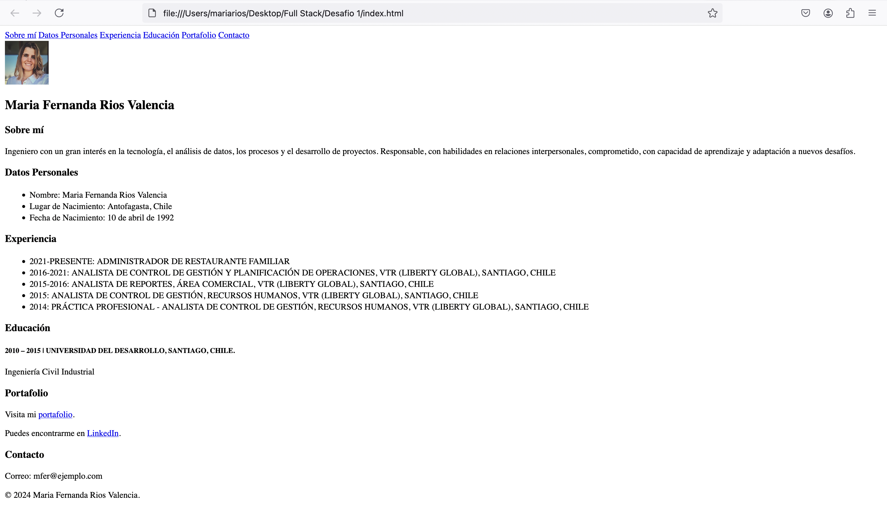
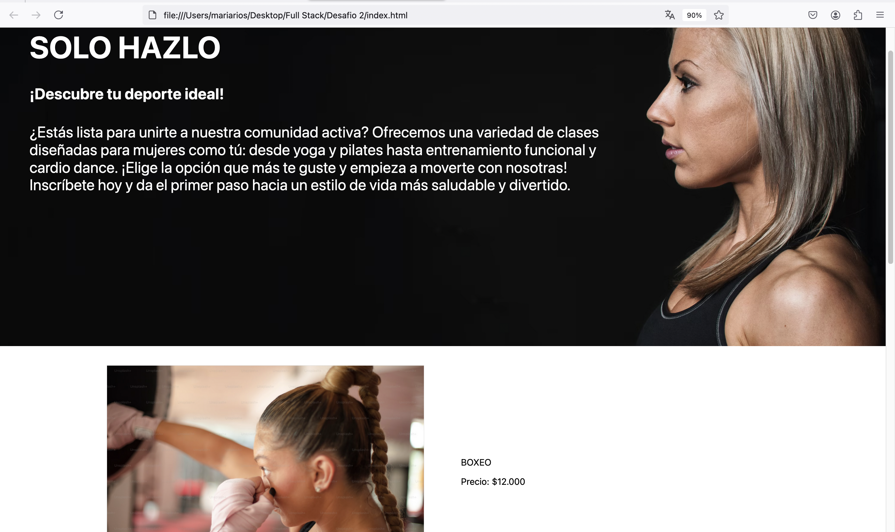
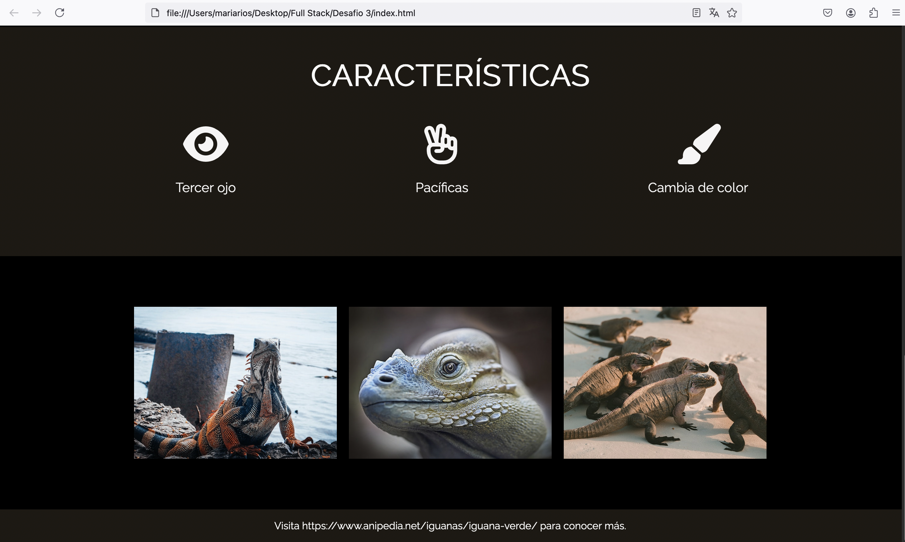

Portafolio




Ingeniera Civil Industrial con experiencia en telecomunicaciones y optimización de procesos, enfocada en planificación y control de gestión. Apasionada por aprender y aplicar conceptos de desarrollo web, con especialización en análisis de datos, mejora continua y gestión de KPIs para maximizar la eficiencia operativa.
Capacidad de trabajar en todas las capas de una aplicación web, tanto en el lado del cliente como del servidor.
Carrera diseñada para adquirir competencias en análisis de datos e implementación de modelos.
Conocimientos en gestión de proyectos y optimización de procesos.